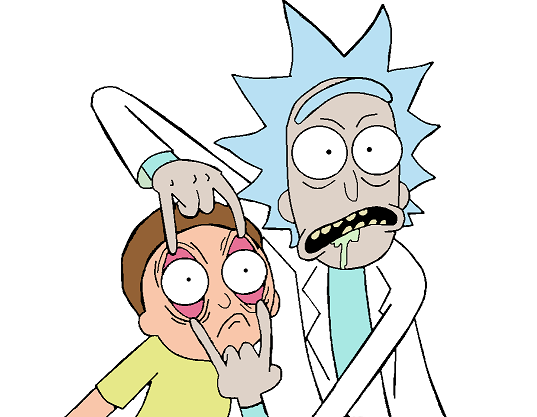

hyprblog
Tu blog de Cabecera
hyprblog
Tu blog de Cabecera
Este es el título atractivo e interesante del post
Y este es el párrafo de inicio donde vamos a explicar las cosas increibles que se pueden hacer con ramas

Es posible que no este funcionado el "Merge" para fucionar los cambios del nodo Cabecera
Suscribete y dale like
Es una nueva mejora a mi blog